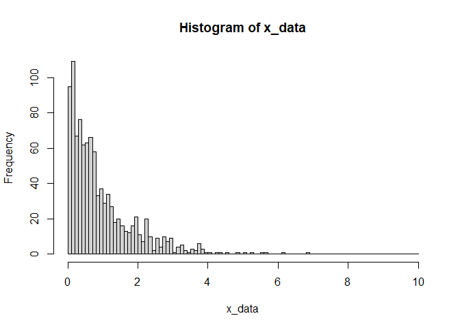

The goal of rando is to provide easier generating of random numbers in a manner that is context aware, and reproducible.
Installation
You can install the released version of rando from CRAN with:
You can install the development version of rando from Github with:
Once installed, to load rando, use
Example
With rando, generating random numbers becomes incredibly easy, as we do not need to define how many random numbers we need. rando will figure out how many you need based on where the number generator is being used.
This works for tibble() declarations
df <- tibble(id = 1:10,
x = r_norm())
df
#> # A tibble: 10 x 2
#> id x
#> <int> <dbl>
#> 1 1 -0.365
#> 2 2 0.173
#> 3 3 -0.294
#> 4 4 0.576
#> 5 5 0.875
#> 6 6 0.359
#> 7 7 -0.527
#> 8 8 -0.819
#> 9 9 -0.990
#> 10 10 0.518and inside of dplyr verbs
mutate(df, y = r_unif())
#> # A tibble: 10 x 3
#> id x y
#> <int> <dbl> <dbl>
#> 1 1 -0.365 0.210
#> 2 2 0.173 0.354
#> 3 3 -0.294 0.317
#> 4 4 0.576 0.0695
#> 5 5 0.875 0.125
#> 6 6 0.359 0.169
#> 7 7 -0.527 0.305
#> 8 8 -0.819 0.601
#> 9 9 -0.990 0.483
#> 10 10 0.518 0.300Parameters can also be used to define the number of values to return. If parameters are longer than 1, rando will try to return the same number of random values, unless there is a clash between two of the parameters
r_norm(mean = 1:10)
#> [1] 0.4088105 2.2987041 2.2807546 3.9659070 4.5111552 5.4712253 6.5461452
#> [8] 6.3708207 7.7550056 8.7627581
r_norm(mean=1:10,sd=1:2)
#> Error: Inconsistent parameter lengths supplied to r_norm()If you want to manually define the number of random numbers to be generated, there are two ways to do it. The old fashioned way: providing the n argument (this must be named)
r_unif(n=20)
#> [1] 0.75427791 0.97153547 0.06031924 0.43098427 0.45223070 0.54105261
#> [7] 0.13882213 0.86252549 0.31421104 0.97247948 0.29288323 0.03809931
#> [13] 0.55187415 0.51237188 0.45841500 0.12699633 0.15236584 0.08755528
#> [19] 0.78088410 0.83223010Or, if we are generating many random numbers, we can set a default n value to be used globally
Safer and replicable
The rando functions also check if parameters being supplied are viable and throws an informative error if not. This is different to the default stats random number generating functions, which may return a lot of NaN values with only a vague warning.
rnorm(n=10,sd=-1)
#> Warning in rnorm(n = 10, sd = -1): NAs produced
#> [1] NaN NaN NaN NaN NaN NaN NaN NaN NaN NaN
r_norm(sd=-1)
#> Error: sd provided to r_norm() must be strictly positiveAll rando functions can also take a .seed argument which does one of two things:
- If a numeric is supplied, then
randowill set this as the random seed before generating the values - If a TRUE is supplied, then
randowill randomly generate a numeric value to be used.
If .seed is not NULL (the default), then this seed value (supplied or generated) will be attached to the output, and can be extracted with pull_seed()
This allows for greater replicability in results.
r_norm(.seed = 42)
#> [1] 1.37095845 -0.56469817 0.36312841 0.63286260 0.40426832 -0.10612452
#> [7] 1.51152200 -0.09465904 2.01842371 -0.06271410 1.30486965 2.28664539
#> [13] -1.38886070 -0.27878877 -0.13332134
#> attr(,"seed")
#> [1] 42
r_norm(.seed = 42)
#> [1] 1.37095845 -0.56469817 0.36312841 0.63286260 0.40426832 -0.10612452
#> [7] 1.51152200 -0.09465904 2.01842371 -0.06271410 1.30486965 2.28664539
#> [13] -1.38886070 -0.27878877 -0.13332134
#> attr(,"seed")
#> [1] 42
x <- r_norm(.seed=TRUE)
x
#> [1] -1.0515017 2.8143380 1.1880200 -1.2010801 -1.1589546 -0.1876997
#> [7] -0.1515049 0.7168907 -0.2086623 -1.0248107 0.7394365 -0.5944315
#> [13] -1.9588881 0.5869532 0.6124257
#> attr(,"seed")
#> [1] 1020465408
r_norm(.seed=pull_seed(x))
#> [1] -1.0515017 2.8143380 1.1880200 -1.2010801 -1.1589546 -0.1876997
#> [7] -0.1515049 0.7168907 -0.2086623 -1.0248107 0.7394365 -0.5944315
#> [13] -1.9588881 0.5869532 0.6124257
#> attr(,"seed")
#> [1] 1020465408Blueprints
In order to make simulations easier, rando provides the blueprint() function. This function creates a plan for a simulated dataset using rando functions.
make_tbl <- blueprint(
x = r_norm(),
y = r_norm()
)
make_tbl(n=2)
#> # A tibble: 2 x 2
#> x y
#> <dbl> <dbl>
#> 1 -1.89 1.34
#> 2 -2.28 0.913
make_tbl(n=5)
#> # A tibble: 5 x 2
#> x y
#> <dbl> <dbl>
#> 1 0.316 -0.154
#> 2 1.86 1.46
#> 3 -0.396 -1.42
#> 4 -1.08 0.481
#> 5 1.75 0.323These blueprints can accept additional arguments and will be generated based on these arguments
make_tbl2 <- blueprint(
x = r_norm(mean=x_mu),
y = r_unif(min=y_min,max=y_max)
)
set_n(10000)
make_tbl2(x_mu = 10, y_min = -10, y_max=-5) %>%
summarise(n = n(), mean_x = mean(x), min_y = min(y), max_y = max(y))
#> # A tibble: 1 x 4
#> n mean_x min_y max_y
#> <int> <dbl> <dbl> <dbl>
#> 1 10000 10.0 -10.0 -5.00This then allows for quick generation of simulation data using pmap() and analysis using map()
make_sim <- blueprint(
x = r_norm(mean = x_mu),
y = r_norm(mean = 2*x+10, sd = 2)
)
tibble(x_mu = r_unif(n = 5, -10, 10)) %>%
pmap(make_sim, n = 100) %>%
map(lm, formula = y ~ x) %>%
map_dfr(broom::tidy)
#> # A tibble: 10 x 5
#> term estimate std.error statistic p.value
#> <chr> <dbl> <dbl> <dbl> <dbl>
#> 1 (Intercept) 9.29 1.35 6.89 5.45e-10
#> 2 x 1.92 0.202 9.48 1.60e-15
#> 3 (Intercept) 8.69 0.723 12.0 5.58e-21
#> 4 x 2.38 0.193 12.3 1.32e-21
#> 5 (Intercept) 10.6 0.726 14.6 2.91e-26
#> 6 x 1.82 0.252 7.20 1.22e-10
#> 7 (Intercept) 10.1 0.770 13.1 3.20e-23
#> 8 x 2.06 0.202 10.2 4.72e-17
#> 9 (Intercept) 9.78 0.426 22.9 3.54e-41
#> 10 x 1.68 0.218 7.72 1.02e-11Distribution Functions
The majority of random number generating functions from the stats package have been translated into rando functions. Be sure to look into the documentation for the rando functions you use, as some have re-parametrised. Functions names for transitioning from stats to rando generally follow the same naming convention, that is r*() becomes r_*(), e.g. r_norm() replaces rnorm(). The only exceptions are r_tdist() and r_fdist() to take over the roles of rt() and rf(), respectively. rando also includes several new distributions such as r_bern() and r_letters().
Arbitrary Distributions
The r_cdf() function is a dynamic random number generator. It can take any cdf as an argument and produce random numbers with the associated distribution.
my_fun <- function(x,beta=1){
if_else(x < 0, 0, 1-exp(-beta*x))
}
set_n(1000)
x_data <- r_cdf(my_fun)
hist(x_data,breaks=seq(0,10,0.1)) Any additional arguments used by the function, can be passed to r_cdf(), and will be used in determining the number of values to generate (just as in the other distribution functions above)
r_cdf(my_fun,beta=1:10)
#> [1] 1.59363151 0.01710057 0.51777959 0.10563731 0.15656352 0.04890561
#> [7] 0.05313754 0.10311007 0.01916289 0.09977221Finally, purrr-style functions can be used for r_cdf() to allow for even briefer function definitions. These have been extended to allow for the use of additional named arguments to be passed to these <lambda> functions. Either .x or .t can be used for the random variable.
set_n(20)
r_cdf(~1-exp(-.x),min=0)
#> [1] 1.00280643 0.51202178 3.15050483 0.38757920 0.16273856 1.37652755
#> [7] 0.41813254 1.14622712 1.26543641 0.01011491 0.65036416 1.35177970
#> [13] 1.25859380 0.30105710 1.45331025 0.22260547 1.71133876 0.12983680
#> [19] 0.41169524 0.26691556
r_cdf(~1-exp(-beta*.x),beta=1:10,min=0,n=10)
#> [1] 0.892275572 0.172501802 0.160342455 0.432735682 0.299936533 0.004011393
#> [7] 0.133234262 0.150531530 0.004047155 0.426167250Code of Conduct
Please note that the rando project is released with a Contributor Code of Conduct. By contributing to this project, you agree to abide by its terms.